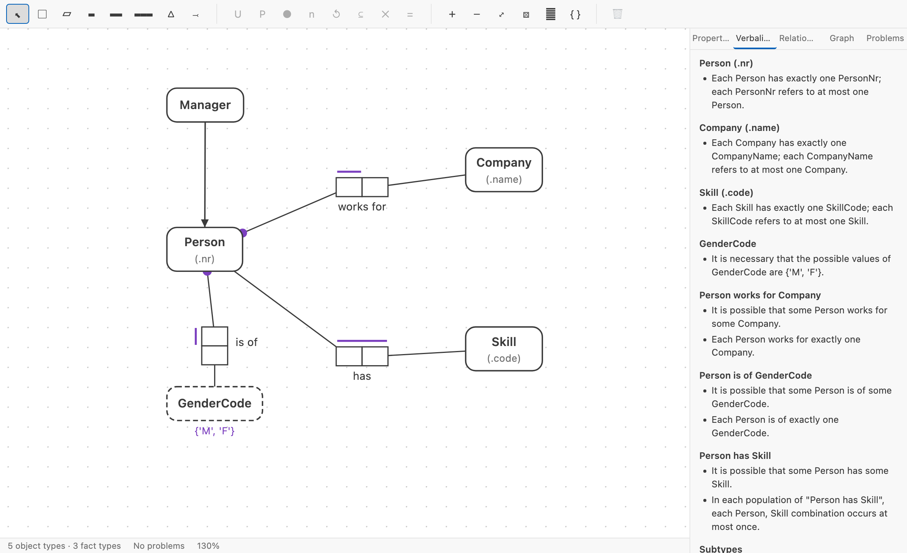
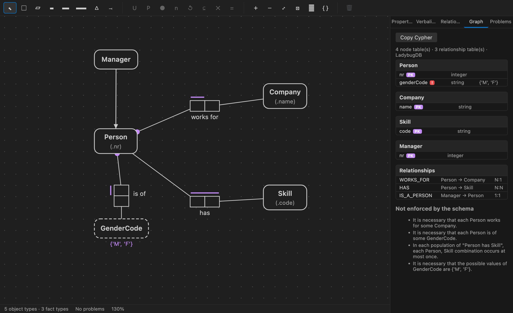

▤
The editor
A real ORM 2 diagram editor as a VS Code custom editor, with live verbalization, validation in the Problems panel, and both mappings in a side panel.
Object-Role Modeling in VS Code. Draw a conceptual schema, read it back as sentences a domain expert can confirm, and map it to a relational or property graph schema — then keep the whole thing in git, where your build can check it and your coding agent can read it.
reads & writes .orm .fbm Apache Ossie UMS free & MIT

The same model, the same rules, three surfaces. Nothing is locked inside the editor — the core has no dependency on VS Code at all, which is why the other two exist.
A real ORM 2 diagram editor as a VS Code custom editor, with live verbalization, validation in the Problems panel, and both mappings in a side panel.
factum validate, verbalize, diff,
drift, ddl, derive. Run it in CI and the build fails
when someone breaks the model.
factum-mcp is an MCP server over the model, so Claude Code or Copilot reads
the conceptual schema instead of guessing it from your table names.
ORM describes a domain as elementary facts — Person works for Company — rather than as tables or classes. Because those facts carry no attributes, every constraint has to be stated explicitly, and the whole model can be read back in plain language.
A schema you can read aloud is a schema a domain expert can approve or reject, before a single table exists.
Deciding what becomes a column is a design step, not a modeling step. ORM keeps the two apart, so the model outlives the schema.
The same conceptual schema maps to relational tables and to a labeled property graph. Compare them side by side and pick.
Everything runs locally, in a VS Code custom editor over a plain JSON file.
Entity and value types with reference modes, unary through n-ary fact types, multiple readings, subtyping, objectification and derived fact types.
Internal and external uniqueness, preferred identifiers, simple and disjunctive mandatory, frequency, all ten ring types, subset, exclusion, equality, value and cardinality — each with an alethic or deontic modality.
A FORML rendering of the model that updates as you draw. Click a sentence to select what it describes.
Missing reference schemes, fact types without uniqueness, constraints too narrow to keep a fact type elementary, subtype cycles — all in the Problems panel.
NORMA .orm, the FBM Exchange MetaModel, Apache Ossie ontologies and the
Unified Modelling Schema — imported and exported, not just read.
Real example rows stored with the model. The verbalizer substitutes them into the readings, and the validator checks your constraints against them.
SVG and PNG export for papers and docs, plus deterministic force-directed auto-layout.
Verbalization is what makes a conceptual schema reviewable. Factum generates it from the constraints themselves, so the sentences cannot drift from the diagram.
Each Person works for exactly one Company.
In each population of "Person has Skill", each Person, Skill combination occurs at most once.
It is necessary that the possible values of GenderCode are {'M', 'F'}.
Each Manager is a kind of Person.A mandatory role plus a uniqueness constraint reads as exactly one; drop the mandatory dot and the same fact type reads at most one. The wording follows the model.
A conceptual schema is not a database design. Factum derives both, and explains every choice it made rather than leaving you to reverse-engineer the output.
Functional fact types are absorbed as columns, compound-unique fact types get their own table,
unaries become booleans, mandatory roles become NOT NULL, and value constraints
become CHECK constraints. Emits PostgreSQL, SQL Server, MySQL, SQLite or ANSI SQL.
CREATE TABLE "Person" (
"personNr" integer NOT NULL,
"companyName" varchar(255) NOT NULL, -- From "Person works for Company"
"genderCode" varchar(1) NOT NULL,
CONSTRAINT "PK_Person" PRIMARY KEY ("personNr"),
CONSTRAINT "CK_Person_genderCode" CHECK ("genderCode" IN ('M', 'F'))
);ORM knows more than a hand-drawn graph model does, and the mapping uses it: uniqueness constraints become relationship multiplicities, lexical value types become properties, and an n-ary fact type — which no edge can hold — is reified into a node.
CREATE NODE TABLE Person(nr INT64 PRIMARY KEY, genderCode STRING);
CREATE REL TABLE WORKS_FOR(FROM Person TO Company, MANY_ONE);
CREATE REL TABLE HAS_STUDENT(FROM Enrolment TO Student, MANY_ONE);
// Constraints the schema cannot enforce:
// [mandatory] It is necessary that each Person works for some Company.
Factum ships with a short book on ORM 2 — elementary facts, the constraint family, subtyping and objectification, and Halpin's seven-step design procedure worked end to end. Every diagram in it was drawn by the extension, and every figure links to the model behind it, so you can open any example and take it apart.
What an elementary fact is, the and-test for splitting compound ones, and the population check that catches invented fact types.
The constraint that carries the most meaning, the three binary patterns, and the arity check that tells you when an n-ary fact type should be split.
The seven steps of the CSDP, applied to a real staff directory report from first sentence to finished schema.
The fact-based modelling community has no agreed exchange standard, and three candidates are in play. Rather than back one, Factum reads and writes all of them — so a model can move between tools instead of being trapped in whichever one drew it.
| Format | Import | Export | What it is |
|---|---|---|---|
.orm | Yes | Yes | NORMA’s ORM 2 XML, the de-facto archive format |
.fbm | Yes | Yes | The FBM Exchange MetaModel, built for interchange |
| Ossie | Yes | Yes | Apache Ossie’s ontology, an incubating ASF standard |
| UMS | Yes | Yes | The Unified Modelling Schema, a logical target |
Every conversion reports what it could not carry rather than dropping it quietly. Exporting a model with an objectified fact type to Ossie tells you Ossie has no objectification; importing UMS tells you that what came back is the shape of the data rather than the facts behind it.
A model stored as text can go through the same gate as everything else you ship. The bundled GitHub Action validates it and comments on the pull request with what the model now says — not with the JSON that changed.
- Each Person works for at most one Company.
+ Each Person works for exactly one Company.
+ It is necessary that each Employee has a Salary.
That is a reviewer reading one sentence and knowing whether to approve it. The same comparison
runs locally with factum diff, and --exit-code lets a job fail on it.
- uses: Volland/factum-orm@v0
with:
model: model/domain.orm.json
base: /tmp/base.orm.json
strict: 'true'factum validate model.orm.json --format github
factum diff before.orm.json after.orm.json
factum drift model.orm.json schema.sql
factum derive people.csv -o people.orm.jsonFact types carry real sample rows, stored in the same file. The verbalizer substitutes them back into the readings, so a domain expert reads “101 works for Acme” rather than a placeholder.
The validator then checks the constraints you drew against the examples you gave. A uniqueness, mandatory, frequency or value constraint your own data contradicts is reported — not believed.
factum drift compares the schema your model maps to against SQL that already
exists — a pg_dump, a migration — and prints the differences with
the ALTER statements that would reconcile them.
It reads SQL text rather than connecting, so there is no driver to install and nothing to grant access to.
The hardest part of modelling is the first fact type. Point Factum at a spreadsheet export and it proposes a first draft — the step both Halpin’s design procedure and FCO-IM actually begin with.
$ factum derive employees.csv
note: "employee_nr" is unique and never empty across all 240 rows,
so it became the reference mode of Employee.
note: "department" takes only 4 distinct values, so a value
constraint was proposed. Confirm the list is closed.An identifying column becomes the entity’s reference mode, types and enumerations are inferred from the values, and every row is kept as a sample fact. Nothing is proposed that the data does not support, and each assumption comes back as a note for you to confirm.
A model is one .orm.json file holding the schema, its layout and its examples,
described by a published JSON Schema so any tool can validate it. It diffs, merges and reviews
like the rest of your source, and it is safe to hand-edit — the diagram is a custom editor over
the text document, so VS Code's dirty state, undo stack and file watching all work normally.
Every element can carry metadata and per-target generation hints, and any x-
prefixed key is yours to use — preserved untouched, so another tool can round-trip data we
know nothing about.
Install the extension and run ORM: New ORM Model, or point
factum derive at a CSV you already have. Either way you have a working schema in a
minute — and it is a file you can commit.